Voľné miesta vo vlakoch
Posledné meranie: 28.10.2026 19:11 · stiahnuť dáta (CSV)
Súhrn po dňoch
| Deň | Trasa | Meraní | Vlakov | Čas meraní |
|---|---|---|---|---|
| streda 28.10.2026 | Bratislava → Vrútky | 143 | 15 | 00:03-19:11 |
| streda 28.10.2026 | Vrútky → Bratislava | 62 | 12 | 08:02-19:01 |
| streda 28.10.2026 | Bratislava → Košice | 61 | 11 | 07:46-18:13 |
| streda 28.10.2026 | Košice → Bratislava | 52 | 10 | 07:47-18:03 |
| utorok 27.10.2026 | Bratislava → Vrútky | 99 | 11 | 00:01-23:59 |
| pondelok 26.10.2026 | Bratislava → Vrútky | 88 | 14 | 00:06-23:50 |
| nedeľa 25.10.2026 | Bratislava → Vrútky | 101 | 15 | 00:01-23:56 |
| sobota 24.10.2026 | Bratislava → Vrútky | 98 | 14 | 00:10-23:50 |
| piatok 23.10.2026 | Bratislava → Vrútky | 64 | 13 | 07:25-23:49 |
| štvrtok 22.10.2026 | Bratislava → Vrútky | 80 | 11 | 00:08-16:10 |
| streda 21.10.2026 | Bratislava → Vrútky | 96 | 15 | 00:10-23:58 |
| utorok 20.10.2026 | Bratislava → Vrútky | 34 | 7 | 13:55-23:50 |
Štatistiky
Bratislava → Vrútky
Typický priebeh obsadenosti pred odchodom
Sivé čiary sú jednotlivé vlaky, červená čiara je medián. Ukazuje, koľko hodín pred odchodom sa vlaky bežne plnia. Obsadenosť sa počíta z odhadnutej kapacity a čas odchodu je odhad z časov meraní.
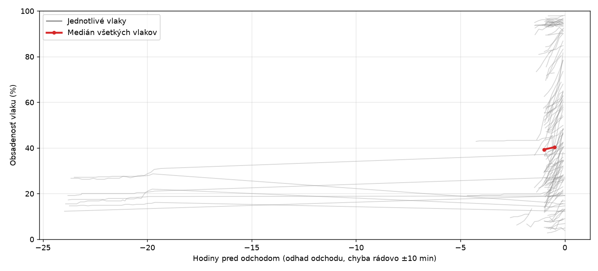
| Pred odchodom | Medián obsadenosti | Vlakov v mediáne |
|---|---|---|
| 1 h | 31 % | 94 |
| 0.5 h | 35 % | 90 |
Plnenie vozňov
Priemerná obsadenosť každého vozňa pri poslednom meraní pred odchodom. Tmavšia farba znamená plnší vozeň. Posledný riadok je priemer cez všetky vlaky.
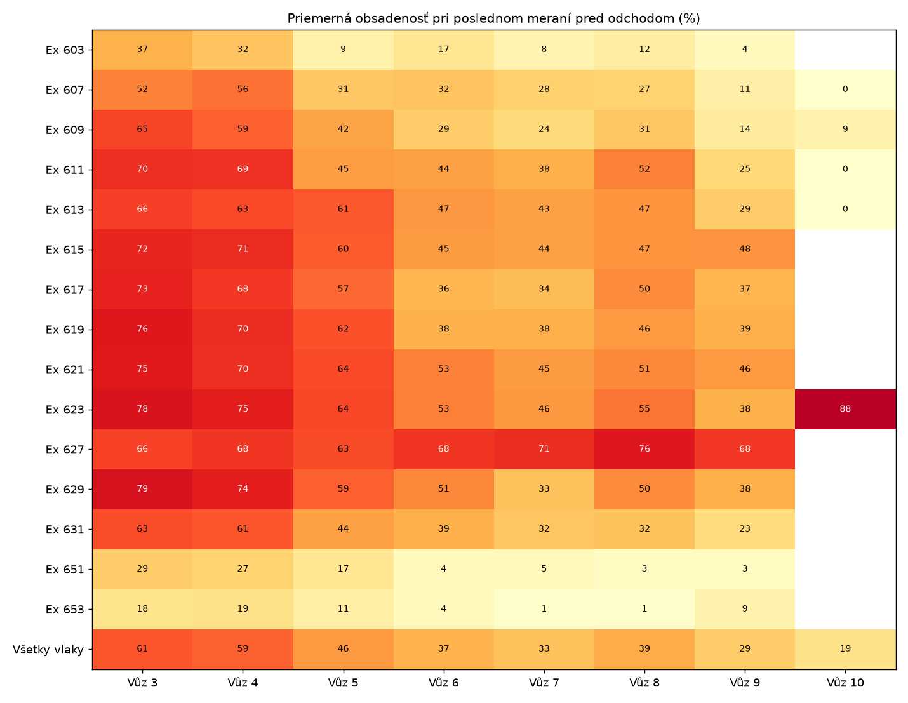
| vozen | Vlak | Vůz 3 | Vůz 4 | Vůz 5 | Vůz 6 | Vůz 7 | Vůz 8 | Vůz 9 | Vůz 10 |
|---|---|---|---|---|---|---|---|---|---|
| Ex 603 | 37 | 32 | 9 | 17 | 8 | 12 | 4 | <NA> | |
| Ex 607 | 52 | 56 | 31 | 32 | 28 | 27 | 11 | 0 | |
| Ex 609 | 65 | 59 | 42 | 29 | 24 | 31 | 14 | 9 | |
| Ex 611 | 70 | 69 | 45 | 44 | 38 | 52 | 25 | 0 | |
| Ex 613 | 66 | 63 | 61 | 47 | 43 | 47 | 29 | 0 | |
| Ex 615 | 72 | 71 | 60 | 45 | 44 | 47 | 48 | <NA> | |
| Ex 617 | 73 | 68 | 57 | 36 | 34 | 50 | 37 | <NA> | |
| Ex 619 | 76 | 70 | 62 | 38 | 38 | 46 | 39 | <NA> | |
| Ex 621 | 75 | 70 | 64 | 53 | 45 | 51 | 46 | <NA> | |
| Ex 623 | 78 | 75 | 64 | 53 | 46 | 55 | 38 | 88 | |
| Ex 627 | 66 | 68 | 63 | 68 | 71 | 76 | 68 | <NA> | |
| Ex 629 | 79 | 74 | 59 | 51 | 33 | 50 | 38 | <NA> | |
| Ex 631 | 63 | 61 | 44 | 39 | 32 | 32 | 23 | <NA> | |
| Ex 651 | 29 | 27 | 17 | 4 | 5 | 3 | 3 | <NA> | |
| Ex 653 | 18 | 19 | 11 | 4 | 1 | 1 | 9 | <NA> | |
| Všetky vlaky | 61 | 59 | 46 | 37 | 33 | 39 | 29 | 19 |
Ktoré miesta sa obsadzujú prvé
Skorosť obsadenia: 100 % znamená, že miesto bolo obsadené už pri prvom meraní, 0 % že sa neobsadilo vôbec. Priemer cez všetky vlaky a dni pre dané číslo miesta vo vozni. Pri málo dňoch dát je výsledok orientačný.
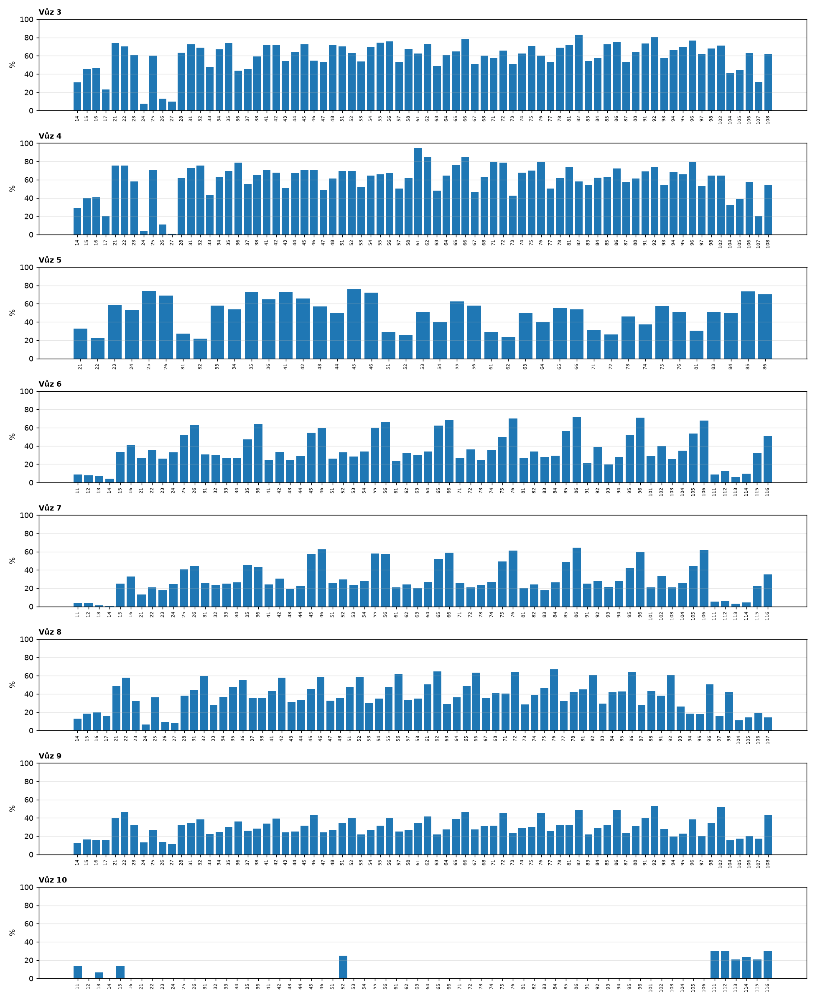
| Kategória | Vozeň | Miesto | Skorosť obsadenia (%) | Pozorovaní (dní) |
|---|---|---|---|---|
| najskôr obsadzované | Vůz 4 | 61 | 93 | 20 |
| najskôr obsadzované | Vůz 4 | 62 | 83 | 20 |
| najskôr obsadzované | Vůz 4 | 66 | 83 | 15 |
| najskôr obsadzované | Vůz 3 | 82 | 81 | 42 |
| najskôr obsadzované | Vůz 3 | 92 | 78 | 42 |
| najskôr obsadzované | Vůz 3 | 96 | 77 | 29 |
| najskôr obsadzované | Vůz 4 | 76 | 76 | 35 |
| najskôr obsadzované | Vůz 4 | 96 | 76 | 53 |
| najskôr obsadzované | Vůz 4 | 36 | 76 | 44 |
| najskôr obsadzované | Vůz 4 | 71 | 76 | 39 |
| najneskôr obsadzované | Vůz 7 | 14 | 0 | 95 |
| najneskôr obsadzované | Vůz 10 | 12 | 0 | 5 |
| najneskôr obsadzované | Vůz 10 | 14 | 0 | 4 |
| najneskôr obsadzované | Vůz 10 | 16 | 0 | 4 |
| najneskôr obsadzované | Vůz 10 | 21 | 0 | 4 |
| najneskôr obsadzované | Vůz 10 | 22 | 0 | 4 |
| najneskôr obsadzované | Vůz 10 | 23 | 0 | 4 |
| najneskôr obsadzované | Vůz 10 | 24 | 0 | 4 |
| najneskôr obsadzované | Vůz 10 | 25 | 0 | 4 |
| najneskôr obsadzované | Vůz 10 | 26 | 0 | 4 |
Predaj miest podľa hodiny dňa
Priemerný počet miest, ktoré sa za hodinu obsadili alebo uvoľnili vo všetkých vozňoch vlaku, podľa porovnania dvoch po sebe idúcich meraní. Hodiny s menej než pol hodinou sledovania sa nezobrazujú.
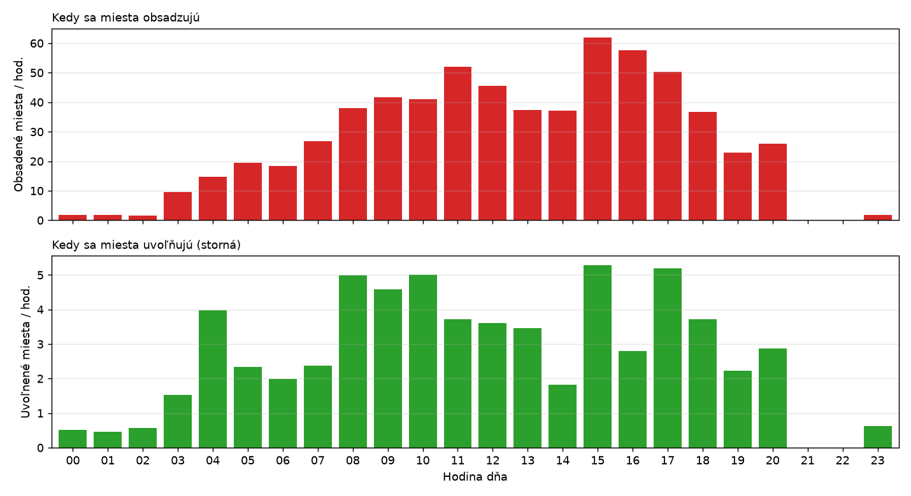
| Hodina | Obsadené miest/hod. | Uvoľnené miest/hod. | Sledované (hod.) |
|---|---|---|---|
| 00:00 | 2.3 | 0.5 | 5.6 |
| 01:00 | 1.6 | 0.7 | 5.7 |
| 02:00 | 2.4 | 0.8 | 5.9 |
| 03:00 | 7.3 | 1.5 | 6.2 |
| 04:00 | 11.9 | 0.0 | 1.1 |
| 05:00 | 21.9 | 2.4 | 3.0 |
| 06:00 | 20.5 | 2.3 | 4.3 |
| 07:00 | 30.6 | 1.9 | 5.3 |
| 08:00 | 43.4 | 6.8 | 4.7 |
| 09:00 | 51.9 | 6.3 | 4.5 |
| 10:00 | 45.9 | 5.3 | 5.7 |
| 11:00 | 56.8 | 3.6 | 4.7 |
| 12:00 | 50.4 | 4.2 | 5.0 |
| 13:00 | 46.9 | 4.5 | 6.2 |
| 14:00 | 45.2 | 2.3 | 1.3 |
| 15:00 | 72.0 | 5.8 | 4.8 |
| 16:00 | 76.1 | 3.5 | 5.2 |
| 17:00 | 58.5 | 5.6 | 5.9 |
| 18:00 | 35.7 | 3.6 | 5.8 |
| 19:00 | 18.7 | 2.1 | 5.7 |
| 20:00 | 26.6 | 2.4 | 1.2 |
| 23:00 | 1.9 | 0.8 | 2.6 |
Uvoľnené miesta (storná)
Miesta, ktoré boli v jednom meraní obsadené a v ďalšom sa znovu objavili ako voľné. Celkom zaznamenaných: 324 miest v 243 prípadoch. Nižšie je posledných 25.
| Čas | Vlak | Vozeň | Uvoľnené miesta |
|---|---|---|---|
| 28.10. 07:13 | Ex 609 | Vůz 4 | 108 |
| 28.10. 06:59 | Ex 609 | Vůz 4 | 95 |
| 28.10. 06:43 | Ex 609 | Vůz 4 | 108 |
| 28.10. 05:53 | Ex 607 | Vůz 5 | 34, 35 |
| 27.10. 20:06 | Ex 653 | Vůz 3 | 86 |
| 27.10. 19:33 | Ex 653 | Vůz 6 | 96 |
| 27.10. 19:33 | Ex 653 | Vůz 3 | 23 |
| 27.10. 18:30 | Ex 651 | Vůz 9 | 23 |
| 27.10. 18:23 | Ex 651 | Vůz 9 | 92 |
| 27.10. 17:57 | Ex 631 | Vůz 4 | 61, 63 |
| 27.10. 17:53 | Ex 631 | Vůz 9 | 68 |
| 27.10. 17:53 | Ex 631 | Vůz 8 | 75, 76 |
| 27.10. 17:43 | Ex 631 | Vůz 3 | 35 |
| 27.10. 17:43 | Ex 631 | Vůz 8 | 51, 52 |
| 27.10. 17:43 | Ex 631 | Vůz 4 | 54 |
| 27.10. 17:36 | Ex 631 | Vůz 3 | 95 |
| 27.10. 17:33 | Ex 631 | Vůz 4 | 61 |
| 27.10. 17:33 | Ex 631 | Vůz 7 | 21, 22 |
| 27.10. 17:15 | Ex 629 | Vůz 6 | 85 |
| 27.10. 17:13 | Ex 629 | Vůz 9 | 82 |
| 27.10. 17:13 | Ex 629 | Vůz 7 | 93, 94 |
| 27.10. 17:04 | Ex 629 | Vůz 7 | 92 |
| 27.10. 17:03 | Ex 629 | Vůz 7 | 15, 16 |
| 27.10. 16:53 | Ex 629 | Vůz 9 | 25 |
| 27.10. 16:13 | Ex 627 | Vůz 9 | 16 |
Vypredané vlaky
Vlak sa považuje za vypredaný, keď obsadenosť dosiahne 98 %. Vypredaných vlakov v dátach: 1 z 104.
| Deň | Vlak | Max. obsadenosť | Vypredaný od | Hodín pred odchodom (odhad) |
|---|---|---|---|---|
| 28.10.2026 | Ex 603 | 20 % | - | - |
| 28.10.2026 | Ex 607 | 25 % | - | - |
| 28.10.2026 | Ex 609 | 34 % | - | - |
| 28.10.2026 | Ex 611 | 45 % | - | - |
| 27.10.2026 | Ex 603 | 18 % | - | - |
| 27.10.2026 | Ex 615 | 20 % | - | - |
| 27.10.2026 | Ex 617 | 28 % | - | - |
| 27.10.2026 | Ex 619 | 34 % | - | - |
| 27.10.2026 | Ex 621 | 42 % | - | - |
| 27.10.2026 | Ex 623 | 29 % | - | - |
| 27.10.2026 | Ex 627 | 92 % | - | - |
| 27.10.2026 | Ex 629 | 60 % | - | - |
| 27.10.2026 | Ex 631 | 41 % | - | - |
| 27.10.2026 | Ex 651 | 12 % | - | - |
| 27.10.2026 | Ex 653 | 5 % | - | - |
| 26.10.2026 | Ex 603 | 15 % | - | - |
| 26.10.2026 | Ex 609 | 26 % | - | - |
| 26.10.2026 | Ex 611 | 40 % | - | - |
| 26.10.2026 | Ex 613 | 30 % | - | - |
| 26.10.2026 | Ex 615 | 36 % | - | - |
| 26.10.2026 | Ex 617 | 32 % | - | - |
| 26.10.2026 | Ex 619 | 21 % | - | - |
| 26.10.2026 | Ex 621 | 23 % | - | - |
| 26.10.2026 | Ex 623 | 58 % | - | - |
| 26.10.2026 | Ex 627 | 43 % | - | - |
| 26.10.2026 | Ex 629 | 28 % | - | - |
| 26.10.2026 | Ex 631 | 17 % | - | - |
| 26.10.2026 | Ex 651 | 9 % | - | - |
| 26.10.2026 | Ex 653 | 9 % | - | - |
| 25.10.2026 | Ex 603 | 21 % | - | - |
| 25.10.2026 | Ex 607 | 21 % | - | - |
| 25.10.2026 | Ex 609 | 16 % | - | - |
| 25.10.2026 | Ex 611 | 21 % | - | - |
| 25.10.2026 | Ex 613 | 27 % | - | - |
| 25.10.2026 | Ex 615 | 54 % | - | - |
| 25.10.2026 | Ex 617 | 59 % | - | - |
| 25.10.2026 | Ex 619 | 58 % | - | - |
| 25.10.2026 | Ex 621 | 82 % | - | - |
| 25.10.2026 | Ex 623 | 83 % | - | - |
| 25.10.2026 | Ex 627 | 69 % | - | - |
| 25.10.2026 | Ex 629 | 62 % | - | - |
| 25.10.2026 | Ex 631 | 42 % | - | - |
| 25.10.2026 | Ex 651 | 12 % | - | - |
| 25.10.2026 | Ex 653 | 5 % | - | - |
| 24.10.2026 | Ex 603 | 28 % | - | - |
| 24.10.2026 | Ex 607 | 50 % | - | - |
| 24.10.2026 | Ex 609 | 61 % | - | - |
| 24.10.2026 | Ex 611 | 63 % | - | - |
| 24.10.2026 | Ex 613 | 64 % | - | - |
| 24.10.2026 | Ex 615 | 78 % | - | - |
| 24.10.2026 | Ex 617 | 47 % | - | - |
| 24.10.2026 | Ex 619 | 47 % | - | - |
| 24.10.2026 | Ex 621 | 40 % | - | - |
| 24.10.2026 | Ex 623 | 31 % | - | - |
| 24.10.2026 | Ex 627 | 34 % | - | - |
| 24.10.2026 | Ex 629 | 31 % | - | - |
| 24.10.2026 | Ex 631 | 35 % | - | - |
| 24.10.2026 | Ex 653 | 13 % | - | - |
| 23.10.2026 | Ex 603 | 26 % | - | - |
| 23.10.2026 | Ex 611 | 87 % | - | - |
| 23.10.2026 | Ex 613 | 92 % | - | - |
| 23.10.2026 | Ex 615 | 93 % | - | - |
| 23.10.2026 | Ex 617 | 96 % | - | - |
| 23.10.2026 | Ex 619 | 95 % | - | - |
| 23.10.2026 | Ex 621 | 98 % | - | - |
| 23.10.2026 | Ex 623 | 96 % | - | - |
| 23.10.2026 | Ex 627 | 96 % | - | - |
| 23.10.2026 | Ex 629 | 95 % | - | - |
| 23.10.2026 | Ex 631 | 90 % | - | - |
| 23.10.2026 | Ex 651 | 20 % | - | - |
| 23.10.2026 | Ex 653 | 13 % | - | - |
| 22.10.2026 | Ex 603 | 21 % | - | - |
| 22.10.2026 | Ex 607 | 28 % | - | - |
| 22.10.2026 | Ex 609 | 42 % | - | - |
| 22.10.2026 | Ex 611 | 46 % | - | - |
| 22.10.2026 | Ex 613 | 46 % | - | - |
| 22.10.2026 | Ex 615 | 68 % | - | - |
| 22.10.2026 | Ex 617 | 74 % | - | - |
| 22.10.2026 | Ex 619 | 80 % | - | - |
| 22.10.2026 | Ex 621 | 95 % | - | - |
| 22.10.2026 | Ex 623 | 94 % | - | - |
| 22.10.2026 | Ex 627 | 98 % | 16:10 | 0.0 |
| 21.10.2026 | Ex 603 | 18 % | - | - |
| 21.10.2026 | Ex 607 | 34 % | - | - |
| 21.10.2026 | Ex 609 | 32 % | - | - |
| 21.10.2026 | Ex 611 | 26 % | - | - |
| 21.10.2026 | Ex 613 | 27 % | - | - |
| 21.10.2026 | Ex 615 | 48 % | - | - |
| 21.10.2026 | Ex 617 | 26 % | - | - |
| 21.10.2026 | Ex 619 | 40 % | - | - |
| 21.10.2026 | Ex 621 | 48 % | - | - |
| 21.10.2026 | Ex 623 | 57 % | - | - |
| 21.10.2026 | Ex 627 | 79 % | - | - |
| 21.10.2026 | Ex 629 | 65 % | - | - |
| 21.10.2026 | Ex 631 | 34 % | - | - |
| 21.10.2026 | Ex 651 | 13 % | - | - |
| 21.10.2026 | Ex 653 | 7 % | - | - |
| 20.10.2026 | Ex 603 | 16 % | - | - |
| 20.10.2026 | Ex 623 | 32 % | - | - |
| 20.10.2026 | Ex 627 | 57 % | - | - |
| 20.10.2026 | Ex 629 | 38 % | - | - |
| 20.10.2026 | Ex 631 | 26 % | - | - |
| 20.10.2026 | Ex 651 | 9 % | - | - |
| 20.10.2026 | Ex 653 | 11 % | - | - |
Porovnanie dní v týždni
Priemerná obsadenosť každého vlaku pri poslednom meraní pred odchodom, rozdelená podľa dňa v týždni.
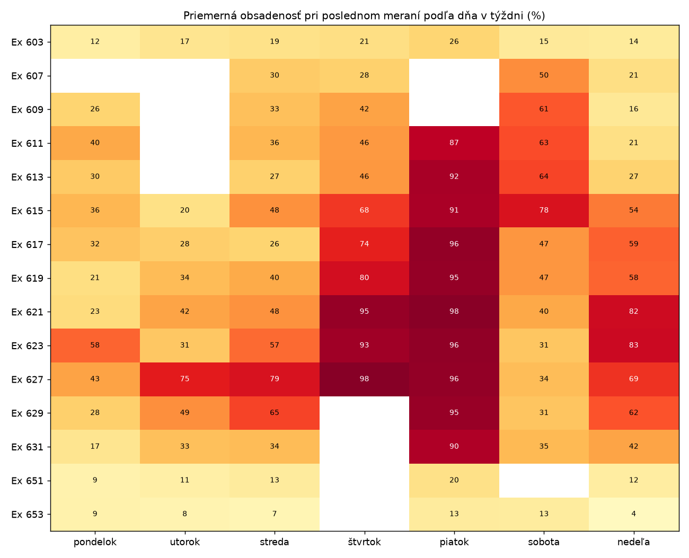
| Vlak | pondelok | utorok | streda | štvrtok | piatok | sobota | nedeľa |
|---|---|---|---|---|---|---|---|
| Ex 603 | 12 | 17 | 19 | 21 | 26 | 15 | 14 |
| Ex 607 | <NA> | <NA> | 30 | 28 | <NA> | 50 | 21 |
| Ex 609 | 26 | <NA> | 33 | 42 | <NA> | 61 | 16 |
| Ex 611 | 40 | <NA> | 36 | 46 | 87 | 63 | 21 |
| Ex 613 | 30 | <NA> | 27 | 46 | 92 | 64 | 27 |
| Ex 615 | 36 | 20 | 48 | 68 | 91 | 78 | 54 |
| Ex 617 | 32 | 28 | 26 | 74 | 96 | 47 | 59 |
| Ex 619 | 21 | 34 | 40 | 80 | 95 | 47 | 58 |
| Ex 621 | 23 | 42 | 48 | 95 | 98 | 40 | 82 |
| Ex 623 | 58 | 31 | 57 | 93 | 96 | 31 | 83 |
| Ex 627 | 43 | 75 | 79 | 98 | 96 | 34 | 69 |
| Ex 629 | 28 | 49 | 65 | <NA> | 95 | 31 | 62 |
| Ex 631 | 17 | 33 | 34 | <NA> | 90 | 35 | 42 |
| Ex 651 | 9 | 11 | 13 | <NA> | 20 | <NA> | 12 |
| Ex 653 | 9 | 8 | 7 | <NA> | 13 | 13 | 4 |
Spoľahlivosť zberu
Podiel meraní, pri ktorých zberový skript nenašiel žiadne vozne (napríklad v noci, keď sa nedá vybrať miesto). Celkom 247 z 987 meraní.
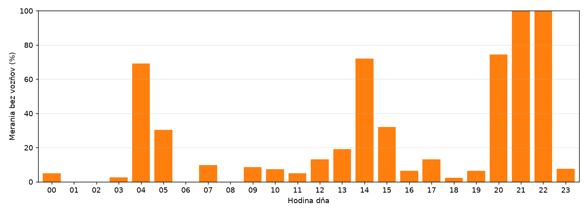
| Hodina | Meraní | Bez vozňov | Podiel (%) |
|---|---|---|---|
| 00:00 | 40 | 2 | 5 |
| 01:00 | 42 | 0 | 0 |
| 02:00 | 45 | 0 | 0 |
| 03:00 | 39 | 1 | 3 |
| 04:00 | 39 | 27 | 69 |
| 05:00 | 33 | 10 | 30 |
| 06:00 | 34 | 0 | 0 |
| 07:00 | 41 | 4 | 10 |
| 08:00 | 34 | 0 | 0 |
| 09:00 | 35 | 3 | 9 |
| 10:00 | 40 | 3 | 8 |
| 11:00 | 39 | 2 | 5 |
| 12:00 | 46 | 6 | 13 |
| 13:00 | 47 | 9 | 19 |
| 14:00 | 50 | 36 | 72 |
| 15:00 | 50 | 16 | 32 |
| 16:00 | 46 | 3 | 7 |
| 17:00 | 46 | 6 | 13 |
| 18:00 | 44 | 1 | 2 |
| 19:00 | 47 | 3 | 6 |
| 20:00 | 43 | 32 | 74 |
| 21:00 | 43 | 43 | 100 |
| 22:00 | 38 | 38 | 100 |
| 23:00 | 26 | 2 | 8 |
Vrútky → Bratislava
Spoľahlivosť zberu
Podiel meraní, pri ktorých zberový skript nenašiel žiadne vozne (napríklad v noci, keď sa nedá vybrať miesto). Celkom 1 z 1 meraní.
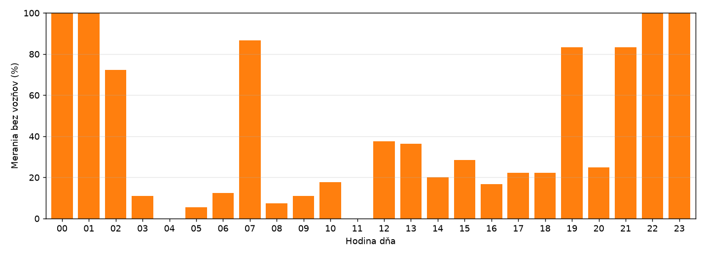
| Hodina | Meraní | Bez vozňov | Podiel (%) |
|---|---|---|---|
| 07:00 | 1 | 1 | 100 |
História grafov po dňoch
Bratislava → Vrútky
streda 28.10.2026
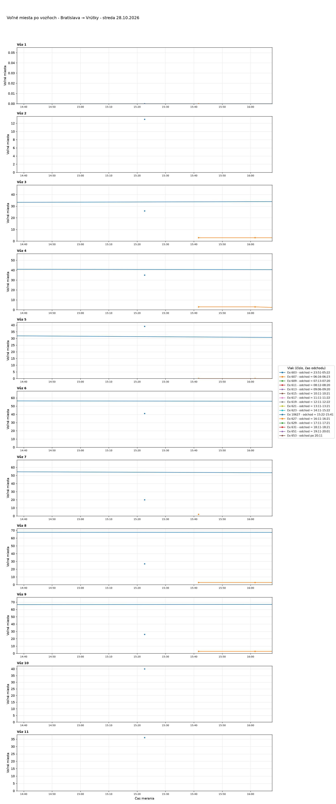

utorok 27.10.2026
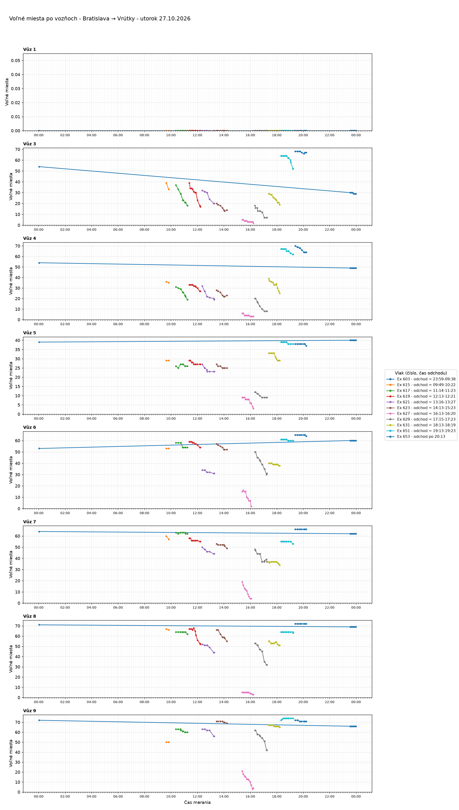

pondelok 26.10.2026
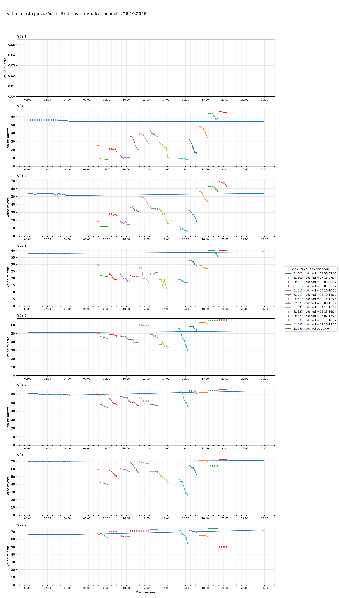

nedeľa 25.10.2026
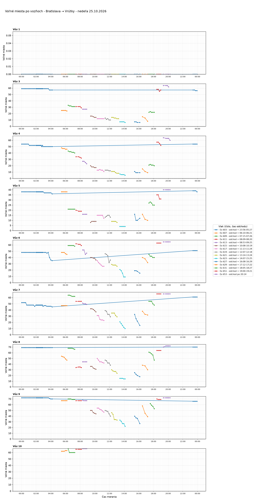

sobota 24.10.2026
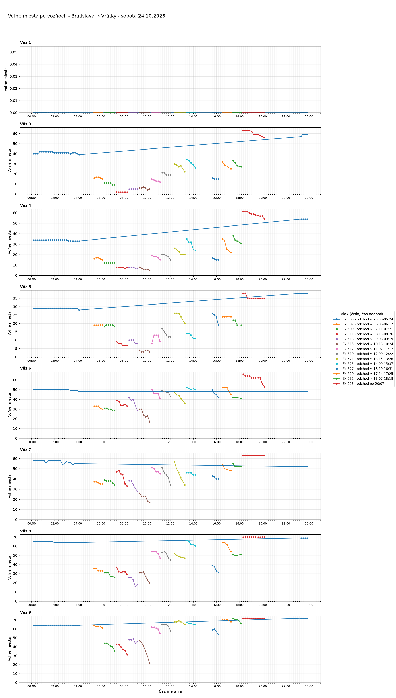

piatok 23.10.2026
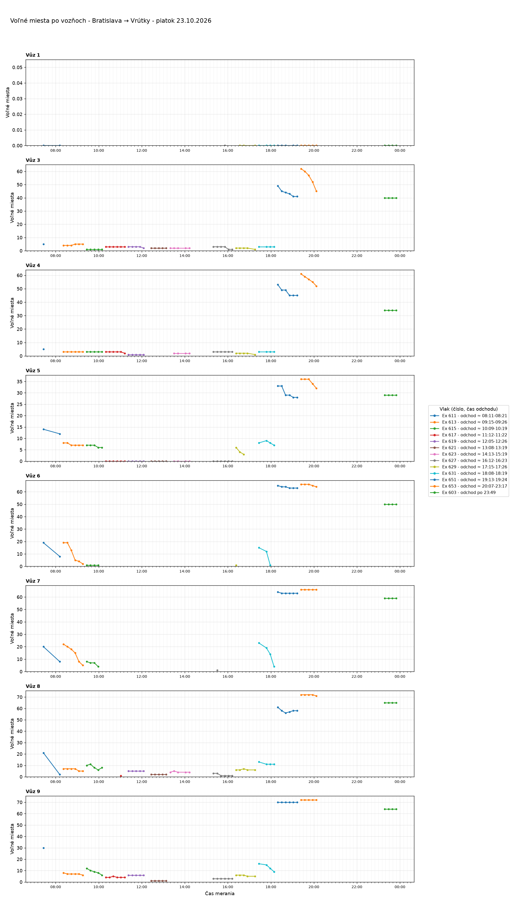

štvrtok 22.10.2026
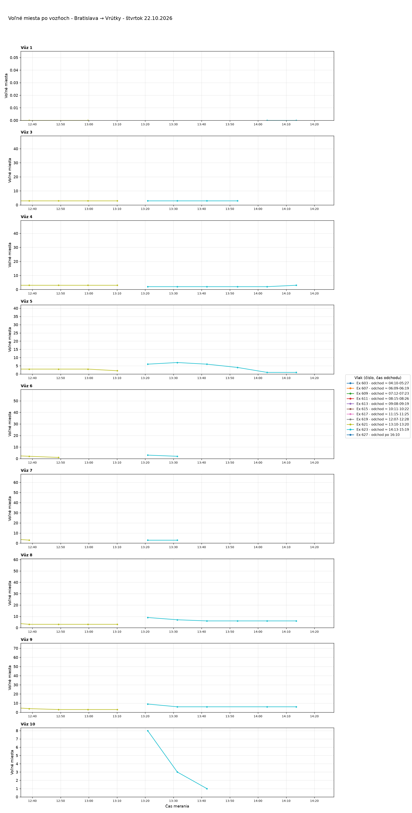

streda 21.10.2026
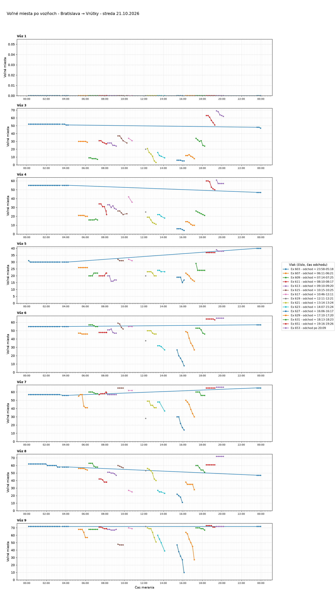

utorok 20.10.2026
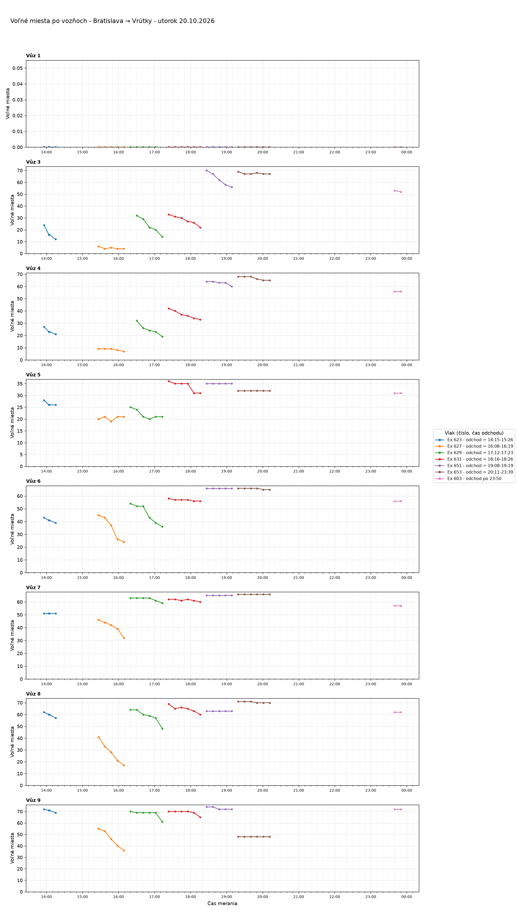

Vrútky → Bratislava
streda 28.10.2026
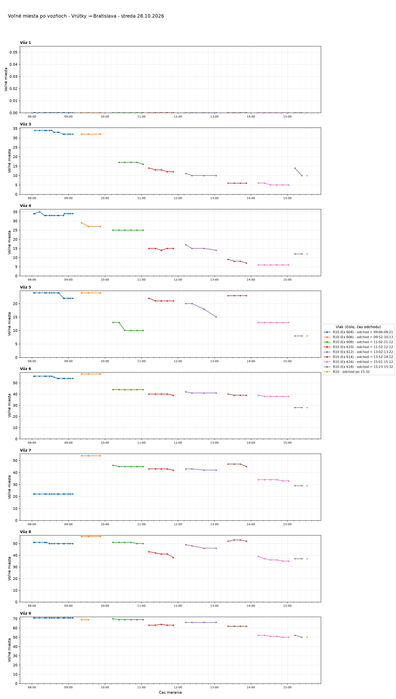

Bratislava → Košice
streda 28.10.2026
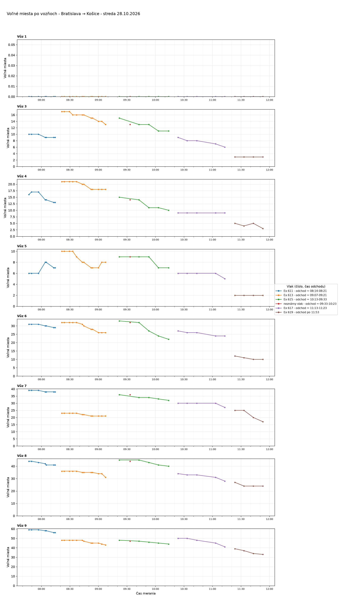

Košice → Bratislava
streda 28.10.2026
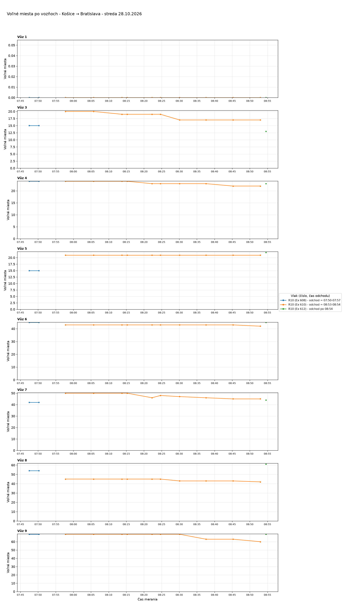